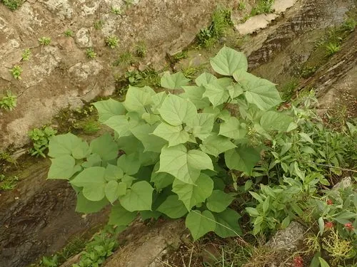

乔木 · 植物界
梓树 Catalpa ovata

紫葳科落叶乔木，树姿端正，夏季开淡黄色钟形花，蒴果细长如豇豆，木材轻软，古人以“梓”代称故乡。
- 分类
- 门被子植物门纲木兰纲目唇形目科紫葳科属梓属
- 栖息环境
- 海拔 1500 米以下的平原、村旁与沟谷，喜光喜温暖湿润
- 地理分布
- 原产中国黄河流域至长江流域；日本有分布，中国各地多栽培
- 保护级别
- 暂无评估；中国未列入国家重点保护野生植物名录
物种志
梓树为紫葳科梓属落叶乔木，高 10–15 米，树冠开展，树皮灰褐色、纵裂。叶片对生或近对生，宽卵形至心形，长 10–25 厘米，边缘有时具 3–5 个浅裂，背面脉腋有紫黑色腺斑。花淡黄色，内面有紫色斑点，组成顶生的圆锥花序，花期 5–6 月；蒴果细长如豇豆，长 20–30 厘米，下垂，成熟后 2 瓣开裂，种子两端具白色长毛，果期 8–10 月。
梓树原产中国，黄河流域至长江流域广泛分布，常栽于村旁、庭院与道路两侧，日本也有分布。它喜光、喜温暖湿润，适宜深厚肥沃、排水良好的土壤，生长较快。木材轻软、耐腐，可制家具、乐器与棺木，古代以梓木制器为贵；树皮、果实与叶可入药，有利尿消肿之效。古人常在住宅旁种植桑树与梓树，“桑梓”因此成为故乡的代称，《诗经》中已有“维桑与梓，必恭敬止”的句子。
形态与习性
- 株高10–15 m，树冠开展
- 花期5–6 月，花淡黄色、内具紫斑
- 果期8–10 月，蒴果细长如豇豆
- 光照喜光，不耐长期荫蔽
- 水分喜湿润，忌积水
- 土壤深厚肥沃、排水良好的壤土
- 主要用途庭院行道绿化，木材制家具，树皮果实入药
趣味知识
- 梓树蒴果细长下垂，形似豇豆，长可达 30 厘米。
- 古人常在家宅旁种桑树与梓树，“桑梓”因此代指故乡。
- 《诗经》有“维桑与梓，必恭敬止”，可见梓树与先民生活关系密切。
- 梓木轻软耐腐，古代常用于制作琴瑟与棺木。